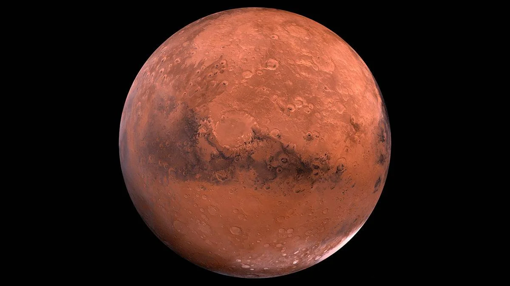
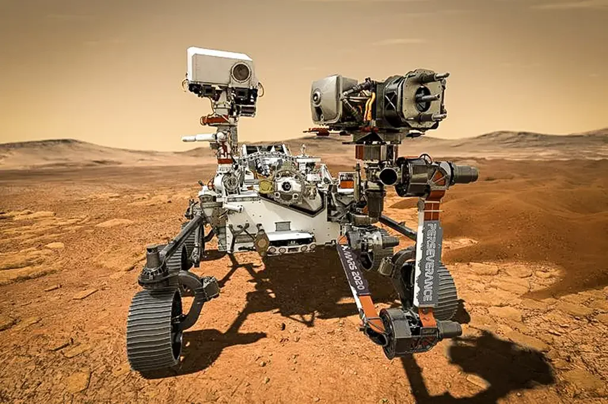

Marte é o quarto planeta do Sistema Solar em relação ao Sol. Também conhecido como "Planeta Vermelho" por conta de sua coloração avermelhada, Marte foi batizado em homenagem ao Deus da Guerra romano.
A gravidade na superfície de Marte é de cerca de 3,71m/s², ou seja, aproximadamente 3x menor que a da Terra. Qualquer objeto ou pessoa na superfície do planeta sentiria o seu peso 38% menor do que na superfície terrestre.
Marte possui apenas dois satélites naturais conhecidos: as luas de Fobos e Deimos, descobertas em 1877. Ambas são consideravelmente menores do que a Lua da Terra e não são visíveis a olho nu. Em relação a satélites artificias, Marte é um dos planetas com a maior quantidade de sondas no Sistema Solar, principalmente por conta de sua proximidade com a Terra.

Marte tem um diametro de cerca de 6792km, aproximadamente metade do diametro da Terra. Além disso, sua massa é de cerca de 6,4174×10²³kg, ou seja, aproximadamente 16 vezes menor que a da Terra.

A fina e fraca atmosfera de Marte é composta principalmente por dióxido de carbono, nitrogenio e argonio, ou seja, impossibilitando a sobrevivencia humana no planeta por conta da baixa presença de oxigenio.
Desde a década de 60, diversos países já enviaram rovers para Marte e, dessas missões, 20 foram bem sucedidas e 28 falharam. O primeiro a explorar a superfície do planeta foi o Sojourner(1977). Hoje, o único robo em Marte é o Perseverance, lançado em 2021. Além dos robos, a NASA planeja enviar humanos para Marte nas próximas 2 décadas.
